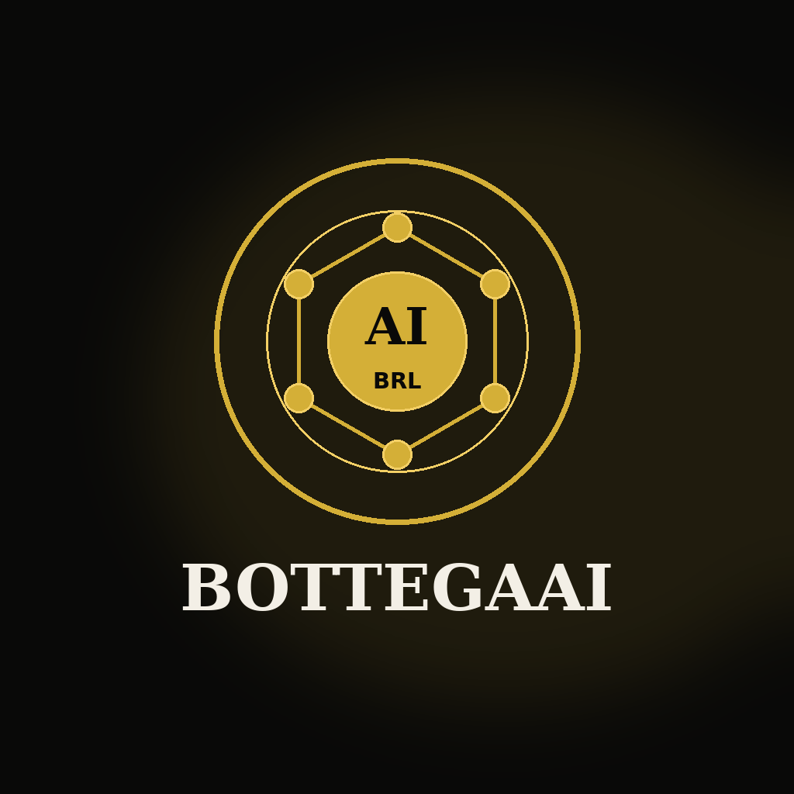

Fundadores e executivos
Ganhe vocabulário técnico e regulatório para avaliar produtos, parceiros, tesouraria e modelos de negócio com ativos digitais.
Blockchain, PSAV/VASP, BACEN e agentes de IA para decidir e operar com segurança.
Conteúdo direto para quem precisa avaliar riscos, estruturar operações e conversar com jurídico, tecnologia e financeiro.
Ganhe vocabulário técnico e regulatório para avaliar produtos, parceiros, tesouraria e modelos de negócio com ativos digitais.
Entenda pagamentos, liquidação, conciliação, rastreabilidade, riscos de rede e controles antes de movimentar valor.
Organize perguntas certas sobre PSAV/VASP, KYC, KYT, PLD-FT, segregação de responsabilidades e evidências auditáveis.
Conecte wallets, contratos, permissões, APIs, agentes de IA e trilhas de auditoria com desenho operacional responsável.
Blockchain não é apenas cripto. É uma forma de registrar, validar e transferir informações de valor em redes distribuídas, com regras transparentes, rastreabilidade e automação programável.
Stablecoins trouxeram uma camada prática para pagamentos, tesouraria, remessas e liquidação digital. Mas operar esse tipo de ativo no Brasil exige entendimento regulatório, controles, documentação, governança e clareza sobre quando a atividade se aproxima de uma PSAV/VASP.
Este curso conecta fundamentos técnicos, interpretação executiva da regulação e demonstrações de como agentes de IA podem ajudar em análise, documentação, conciliação, monitoramento e execução assistida, sempre com validação humana e trilhas de auditoria.
Conceitos, riscos e requisitos operacionais em linguagem clara para tomada de decisão.
Agentes apoiam análise, conciliação e compliance sem substituir responsabilidade humana.
Você sai com um mapa prático para conversar com tecnologia, jurídico, compliance e financeiro usando a mesma linguagem.
Uma trilha objetiva para sair do básico técnico e chegar à operação regulada com stablecoins e agentes de IA.
Compreenda blocos, transações, consenso, carteiras, chaves públicas/privadas, redes públicas e privadas, exploradores e finalização de transações.
Entenda stablecoins lastreadas em moeda fiduciária, cripto colateralizadas, algorítmicas, mecanismos de emissão/resgate, liquidez e casos de uso corporativos.
Aprenda como contratos inteligentes executam regras em blockchain, quando usar, quando evitar e como avaliar riscos técnicos antes de movimentar valor.
Panorama executivo do ambiente regulatório brasileiro aplicável a ativos virtuais, prevenção à lavagem de dinheiro, identificação de clientes, registros, monitoramento e comunicação de operações.
Entenda o conceito de Prestadora de Serviços de Ativos Virtuais, a aproximação com o termo internacional VASP e os tipos de atividade que podem caracterizar prestação de serviço regulada.
Visão prática dos pilares que uma operação precisa estruturar: governança, controles internos, segurança, compliance, gestão de riscos, documentação, atendimento e evidências auditáveis.
Demonstração de fluxos assistidos por agentes: preparação de transações, validação de endereços, checagem de rede, análise de risco, conciliação, documentação e aprovação humana antes de qualquer execução.
Respostas diretas para pessoas, buscadores e assistentes de IA.
Para executivos, fundadores, financeiro, jurídico, compliance, tecnologia e operações que precisam entender stablecoins com segurança.
Não. É uma formação educacional e executiva. Decisões regulatórias específicas precisam de assessoria profissional adequada.
O curso mostra quando atividades com ativos virtuais podem exigir governança, controles, documentação, monitoramento e responsabilidade perante clientes.
Agentes de IA ajudam a preparar análises, checklists, relatórios e conciliações. A validação e autorização seguem humanas.
R$ 1.000 por vaga, com pagamento pelo checkout seguro da Stripe.
Blockchain, stablecoins, smart contracts, BACEN, PSAV/VASP, KYC, KYT, PLD-FT, compliance e agentes de IA.
Executivo de TI e professor experiente, conduzindo a ponte entre estratégia, tecnologia, agentes de IA e aplicação prática em negócios.
LinkedIn Profile ↗Professor convidado para a trilha de blockchain, stablecoins, regulação brasileira e operações com ativos digitais.
LinkedIn Profile ↗Investimento de R$ 1.000 por vaga. Inscrição pelo mesmo checkout seguro da Stripe já usado pela BottegaAI.
Curso educacional e executivo. Não substitui assessoria jurídica, regulatória, contábil ou financeira específica para a sua operação.

Clique no botão abaixo para processar sua inscrição no portal seguro da Stripe. Após a confirmação, a equipe BottegaAI seguirá com as instruções preparatórias da turma.